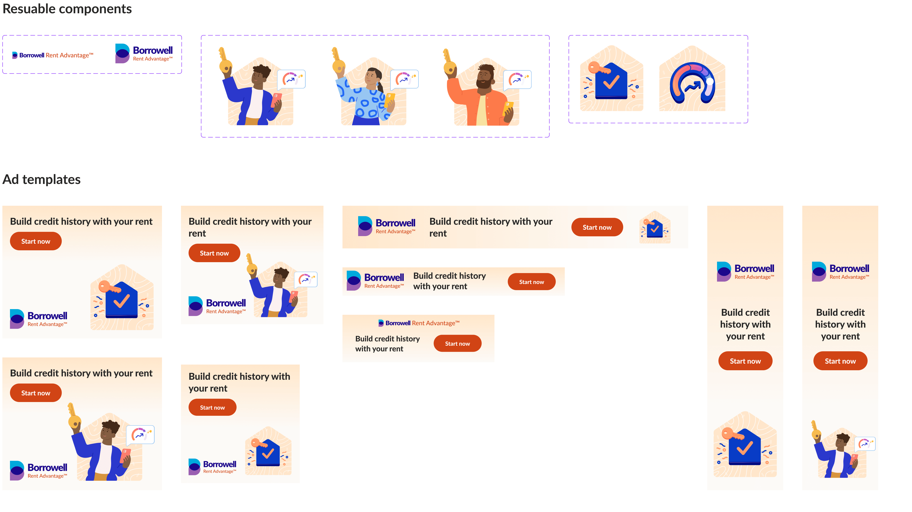

An overview of Borrowell's brand evolution from 2018-2023.
Borrowell is a customer facing platform that provides free credit scores, credit education, credit building products and financial product recommendations. They were the first company to provide free credit scores in Canada. Their mission is to make financial prosperity possible for everyone. Through their web platform and mobile app they help people feel in control and optimistic about their financial future.
Friendly
Trustworthy
Approachable
Accessible
My role involved:
Brand & identity design
Visual design
Illustration
Animation
Web design
Creative direction
Illustration also by: Kate Traynor, Florian Lisse, Brittany Edwards
Creative direction also by: Patryk Adamzyck, Jennette Weber, Bretton MacLean
In 2018, I was the first visual designer to join Borrowell. The pre-existing branding involved a logo, typeface, colour palette and an illustrated character. My initial focus was to quickly create graphic assets that could be used across marketing and email initiatives. This involved designing ads, social posts, email headers, spot illustrations and product mockups.
Some initial designs I created that used the branding established by an external company, prior to me joining Borrowell.
The colours in the original palette clashed. There also weren’t any values of the colours provided, just the fully saturated ones.
It was difficult to create illustrations that looked cohesive together without having a pre-existing style to start from.
Initially, the established character had a simplistic style, but its young and gender-specific features raised doubts about its relatability and credibility as the face of Borrowell. Eventually, the decision was made to abandon the idea of using a mascot altogether.
In 2019, Kate Traynor and I collaborated to refine Borrowell's color palette while maintaining blues and purples as the primary colours. We added warm and cool colors to enhance hierarchy and depth in illustrations, as well as added values for each color. We also incorporated variations of blue-purple gradient backgrounds with organic shapes into Borrowell's brand language.
Evolution of Borrowell's colour palette from 2018 to 2019.
Kate initial character's for Borrowell using pink and purple skin tones for diversity.
Kate started creating illustrations for each project, using purple and pink skin tones to add diversity. However, we eventually made the decision that natural skin tones would better represent diversity. To make finances more approachable, we opted for recognizable and relatable characters.
Characters from the libraries I put together with some characters created by Florian Lisse, Birttany Edwards and I. These have a variety of ethnicities, realistic skin tones and body proportions to show diversity.
With remote work being the norm in 2020, templates became crucial for scalability as in-person explanations were no longer possible.
How can I make things more efficient for the teams and myself?
How can I ensure the teams I support are using branding in the correct way?
How can I reduce my workload on repetitive tasks so I can focus on more impactful ones?
Presentation deck template: This reduced the amount of ad hoc requests my team and I received. It also established an updated look for presentation decks so they could be cohesive company-wide.
Email templates and reusable components in Salesforce: This empowered the email engagement to create a variety of layouts in their emails, but still stay on-brand.
Social media templates: This allowed the marketing team to swap out copy and images in templates that followed brand colours and typography.
Canva ad templates: This enabled the marketing team to test copy without needing my support to update it every time.
Presentation deck slide templates. Instructional slides include resuable assets like numbers, tags, phone frames and graphs that follow brand standards. These were created for a cohesive look and to increase speed/efficiency for others creating presentations.
After a few years had passed, I started evaluating what had been established and whether it still met the ever-changing needs of the company.
In 2022, we shifted to lighter backgrounds. Saturated backgrounds posed a challenge for our illustrations as we wanted to maintain a hierarchy where the illustrations stood out more than the background. To achieve this, we followed the principle of desaturation as objects appear less saturated the further away they are from a viewer. We also introduced brand elements like imperfect, hand-drawn lines, shapes and textures to reflect human nature to have imperfections. This is in effort to make the branding distinct, but still relatable.
2018-2021 illustrations and ads that have mostly saturated backgrounds. I also started to experiment with lighter ones during this time to increase the promience of the imagery.
2022-2023 illustrations and ads after adopting light backgrounds to enhance saturation and prominence of illustrated elements. Illustrations credits also to Brittany Edwards.
I switched ad templates from Canva to Figma in 2023, as auto layouts in Figma allowed for responsive templates that adjust to frame size changes. I also created reusable components for easy swapping of images, enabling quick and easy testing of multiple ad variations.
Ad templates in Figma with reusable components in the top row for easy ability to swap out graphics in each ad to create more variety.
Continue to diversify our illustrated characters, including skin tone, age, culture, and physical abilities, in line with Borrowell's mission of promoting financial prosperity for everyone.
Make the shift from saturated background to lighter ones across all channels for a cohesive brand experience.
Evolve the overall messaging of Borrowell from focusing solely on “free credit score” to “building credit and achieving financial goals” so it’s more encompassing of the new credit building products that were launched in 2022.
Proposed Credit Builder landing page evolution from saturated backgrounds to lighter ones.
Using graphics and animations to simplify financial concepts, I helped facilitate the growth of acquisition from approximately 700k to over 2.5 million members in the span of five years.
Establishing a framework for projects made it quicker to begin and ensured alignment with the Borrowell brand.
Working for a startup involves a balance of quick deliverables for testing and learning, and establishing guidelines for efficiency.
Style guides are a starting point for branding, but they will evolve with team and company needs.
Continuously evaluate processes for improvements. Upfront effort may be required, but it can save time and money in the long run.